How to make a stacked slice sculpture from a 3D model
A stacked slice sculpture is a pile of flat layers. Each layer is one section of the model, cut from plywood, MDF, acrylic or cardboard. Glued, or held on dowels, the layers make the shape again. This guide uses Lamina, a free laser slicer that runs in your browser.
What you need
- A 3D model: STL, OBJ, 3MF, PLY, OFF or GLB.
- Sheets of your material, and calipers to measure their real thickness.
- A laser cutter, a CNC router for thick sheets, or a 3D printer to print the layers.
- Wood glue, or dowel rods of one size.
Steps
The pictures show the horse from the video above. Each picture shows the app at that step. An orange ring with a label marks the control to use.
- Open Lamina on Stacked Slices. It opens on the Model tab, with
the bunny example cut in layers.

- In upload, choose your model file.
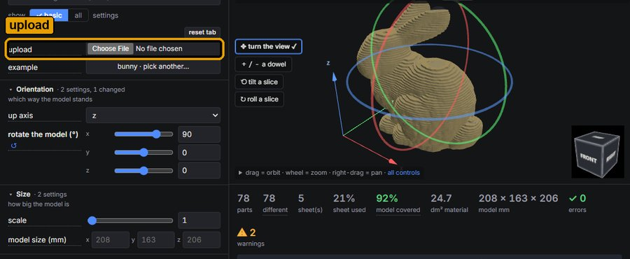
- In model size (mm), type the height of the finished piece in the z box. The x and
y boxes follow.

- On the Technique tab, set axis to the direction the layers stack. z stacks them up the
height. x or y gives side profiles. Pick the direction where each layer holds together. Stacked up
its height, the horse's body would sit on its thin hind legs.
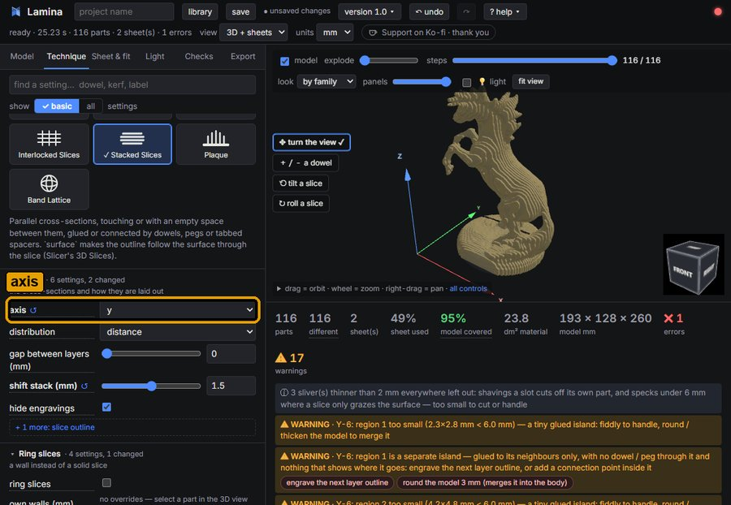
- In distribution, keep distance to put the layers face to face, one sheet thick each. Pick
count to set the number of layers yourself.
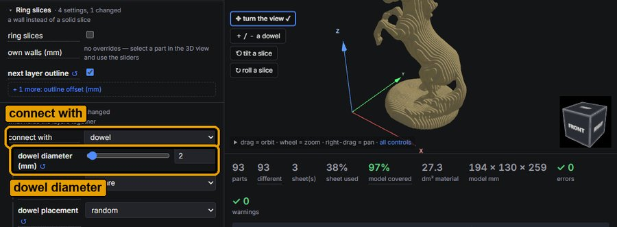
- In connect with, pick how the layers hold together:
- none: glue them face to face.
- dowel: rods through the layers.
- tab: flat pegs cut from the sheet.
- standoff (3D printed): printed posts between the layers.

- In dowel diameter (mm), type the diameter of your dowel rods. On the horse, 4 mm rods left one
small piece without a dowel. The count under the 3D view showed 1 error. 2 mm rods hold every piece.
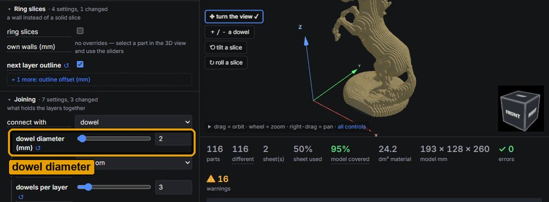
- On the Sheet & fit tab, under What you make with, click Laser. For thick sheets,
click Router.
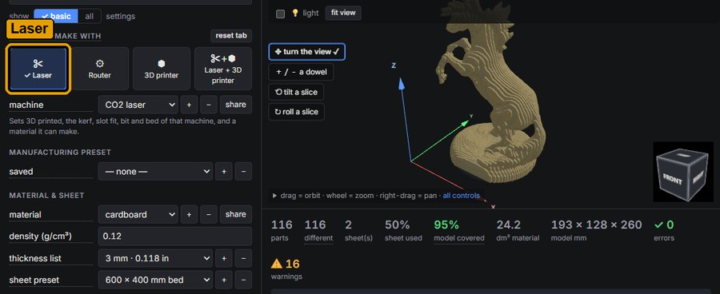
- In machine, pick your machine. It sets the kerf and the bed size of that machine.
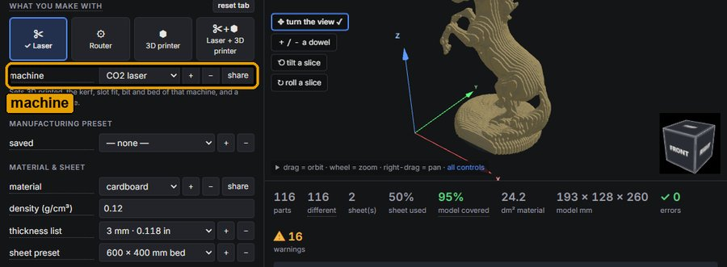
- In material, pick your material.
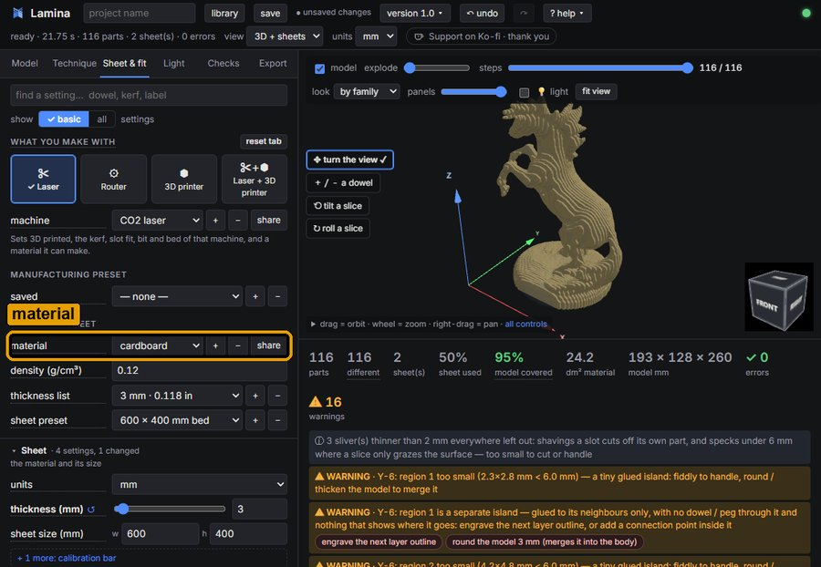
- In thickness (mm), type the thickness you measured with the calipers. Thinner layers give a smoother
shape, and more parts to cut.
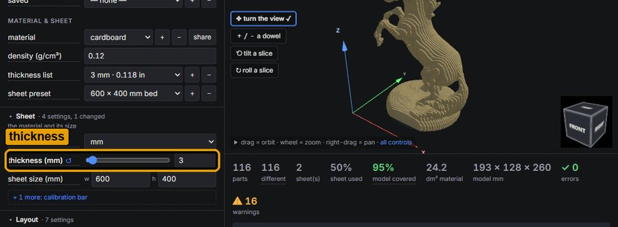
- Read the errors and warnings under the 3D view. Correct every error before you cut. Each
warning names a part and its problem, and the buttons under the warning fix it.
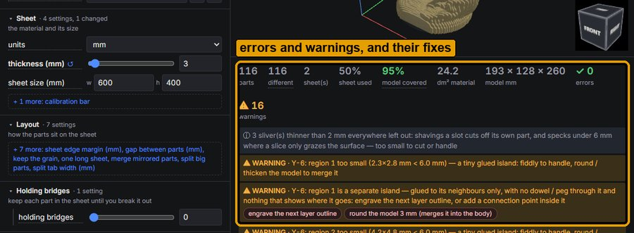
- On the Export tab, click fit test to cut. Cut it from the same sheet as the parts.
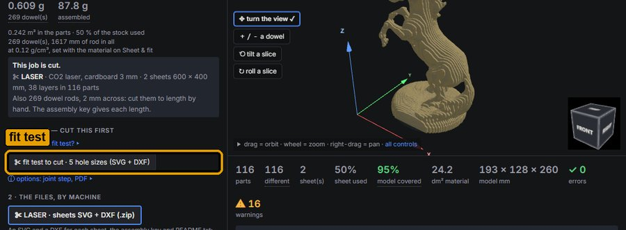
- Push a dowel into each of the five holes of the fit test. On the Sheet & fit tab, type the number
of the loosest hole that still holds into slot offset (fit).
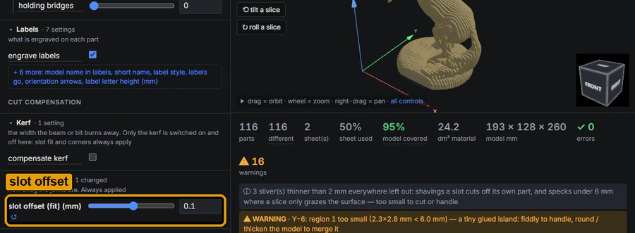
- On the Export tab, click Laser · sheets SVG + DXF (.zip) and cut the sheets. The .zip also
holds the assembly key and a README.
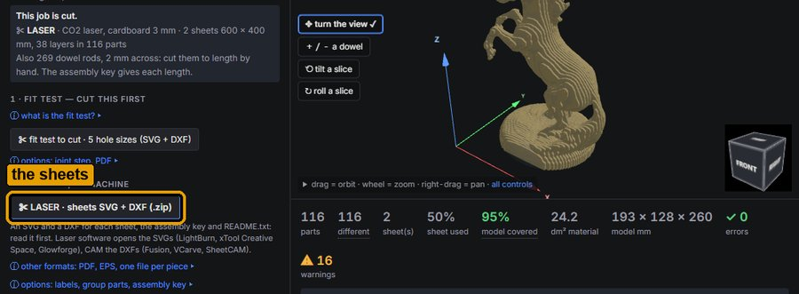
- Put the layers on the dowels in order, dry, before you use glue. Then glue them.
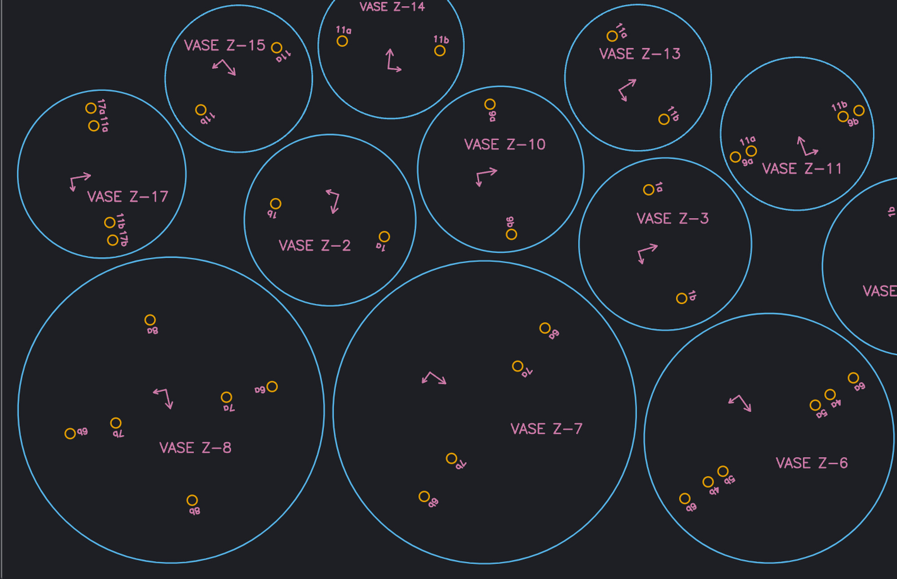
Every part has its name, and every dowel hole has a number. Dowel 3a joins Z-3 to Z-4. Two arrows show which way is up and which face is the front.
Options that help
- ring slices. Each layer keeps only a wall of the width you give, and the middle is cut away. The stack is a shell and uses about a quarter of the material.
- hide dowels. A dowel joins two layers. It goes only where the layer below them and the layer above them cover its hole. No hole then shows on the steps. The first and the last layer still show theirs.
- hide engravings (on at the start). Labels, numbers and arrows go only where the layer glued on top covers them. The top layer stays clean.
- next layer outline. Each layer gets the outline of the next layer engraved on it, as a line to glue by.
- The old 3D Slices. Set slice outline to outer and sand each step down to the shape. Click all at the top of the settings to see this row.
- max piece length. A ring longer than this length is cut into pieces joined by puzzle tabs, so each piece fits your sheet.
- Light between the layers. Set a gap between layers (mm) and put a small LED inside. The light comes out between the layers, and the Light tab shows it before you cut.

Made with stacked slices

Charging bull on a rock
by Colin Robinson

Eagle with spread wings
by Colin Robinson

Freddie Mercury bust
by Julia
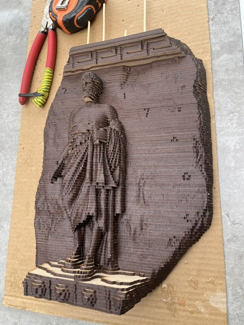
Roman statue in relief
on dowels, by Julia
More in the gallery. For slices that slot together instead, see interlocking slices.